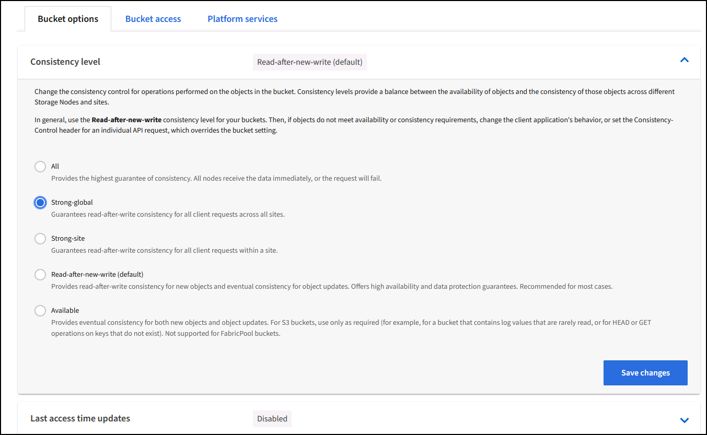
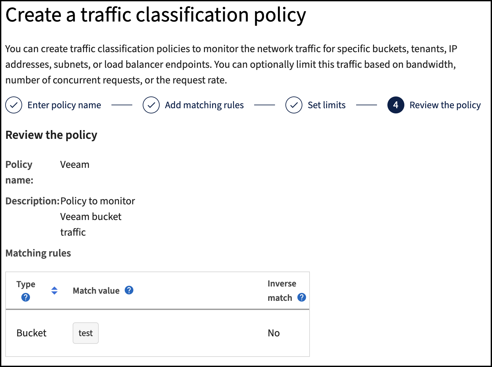

经验证的第三方解决方案
经验证的第三方解决方案
使用Veeam备份和复制进行部署的StorageGRID最佳实践
 建议更改
建议更改
本指南重点介绍NetApp StorageGRID以及部分Veeam备份和复制的配置。本白皮书面向熟悉Linux系统并负责维护或实施NetApp StorageGRID系统与Veeam备份和复制的存储和网络管理员。
概述
存储管理员希望通过满足可用性、快速恢复目标、可扩展以满足其需求以及自动执行长期数据保留策略的解决方案来管理数据增长。这些解决方案还应提供保护、防止丢失或恶意攻击。Veeam和NetApp合作创建了一个将Veeam备份和恢复与NetApp StorageGRID相结合的数据保护解决方案、用于内部对象存储。
Veeam和NetApp StorageGRID提供了一个易于使用的解决方案、可协同工作、帮助满足全球数据快速增长和法规不断增长的需求。基于云的对象存储因其弹性、扩展能力、运营效率和成本效益而闻名、这使其成为备份目标的自然选择。本文档将为Veeam Backup解决方案和StorageGRID系统的配置提供指导和建议。
Veeam的对象工作负载会为小型对象创建大量并发放置、删除和列表操作。启用不可迁移性将增加对对象存储的请求数量、以设置保留和列出版本。备份作业的过程包括为每日更改写入对象、新写入完成后、该作业将根据备份的保留策略删除任何对象。备份作业的计划几乎总是重叠的。这种重叠将导致备份窗口的很大一部分在对象存储上包含50/50的放置/删除工作负载。在Veeam中调整任务插槽设置的并发操作数、通过增加备份作业块大小来增加对象大小、减少多对象删除请求中的对象数量、 选择完成作业的最长时间窗口将优化解决方案的性能和成本。
请务必阅读的产品文档 "Veeam备份和复制" 和 "StorageGRID" 开始之前。Veeam提供了一些计算器、用于了解Veeam基础架构的规模估算以及在调整StorageGRID 解决方案 规模之前应使用的容量要求。请始终访问Veeam Ready计划网站查看经Veeam-NetApp验证的配置 "Veeam Ready对象、对象不可变性和存储库"。
Veeam配置
建议版本
建议始终保持最新、并为Veeam Backup & Replication 12系统应用最新的修补程序。目前、我们建议至少安装Veeam修补程序P20230718。
S3存储库配置
横向扩展备份存储库(SOBR)是S3对象存储的容量层。容量层是主存储库的扩展、可提供更长的数据保留期限和更低的存储解决方案成本。Veeam能够通过S3对象锁定API提供不可变功能。Veeam 12可以在一个横向扩展存储库中使用多个分段。StorageGRID对单个存储分段中的对象数量或容量没有限制。使用多个分段可以提高备份非常大的数据集时的性能、在这些数据集中、对象中的备份数据可能会达到PB级。
可能需要限制并发任务、具体取决于特定解决方案的规模估算和要求。默认设置为每个CPU核心指定一个存储库任务插槽、并发任务插槽限制为64。例如，如果服务器有2个CPU核心，则对象存储总共将使用128个并发线程。这包括Put、GET和批删除。建议先为任务时隙选择一个保守限制、并在Veeam备份达到新备份和即将过期备份数据的稳定状态后调整此值。请与您的NetApp客户团队合作、适当估算StorageGRID系统的规模、以满足所需的时间窗口和性能要求。要提供最佳解决方案、可能需要调整任务插槽数量和每个插槽的任务限制。
备份作业配置
Veeam备份作业可以使用不同的块大小选项进行配置、应仔细考虑这些选项。默认块大小为1 MB、而Veeam具有数据压缩和重复数据删除功能、可为初始完整备份创建大约500 KB的对象大小、为增量作业创建100-200 KB的对象大小。通过选择更大的备份块大小、我们可以大幅提高性能并降低对象存储的要求。尽管较大的块大小可以显著提高对象存储的性能、但由于存储效率性能降低、可能会增加主存储容量需求。建议为备份作业配置4 MB的块大小、以便为完整备份创建大约2 MB的对象、并为增量备份创建大约700 kB-1 MB的对象大小。客户甚至可以考虑使用8 MB块大小配置备份作业、此功能可在Veeam支持人员的协助下启用。
实施不可配置备份时会使用对象存储上的S3对象锁定。不可更改性选项会生成更多的对象存储请求、以更新对象的列表和保留。
随着备份保留过期、备份作业将处理对象删除。Veeam以多对象删除请求的形式将删除请求发送到对象存储、每个请求1000个对象。对于小型解决方案、可能需要对此进行调整、以减少每个请求的对象数量。降低此值还可以更均匀地在StorageGRID系统中的节点之间分布删除请求。建议使用下表中的值作为配置多对象删除限制的起点。将表中的值乘以所选设备类型的节点数、即可获得Veeam中设置的值。如果此值等于或大于1000、则无需调整默认值。如果需要调整此值、请与Veeam支持部门合作进行更改。
| 设备型号 | 每个节点的S3MultiObjectDeleteLimit |
|---|---|
SG5712 |
34. |
SG5760 |
75 |
SG6060 |
200 |

|
请与您的NetApp客户团队合作、根据您的特定需求确定建议的配置。Veeam配置设置建议包括：
|
StorageGRID配置
建议版本
对于Veeam部署、建议使用带有最新修补程序的NetApp StorageGRID 11.5或11.7版本。StorageGRID 11.6.0.11和11.7.0.4中引入了许多优化功能、这些功能对Veeam工作负载非常有用。建议始终保持最新、并为StorageGRID系统应用最新的修补程序。
负载平衡器和S3端点配置
Veeam仅要求通过HTTPS连接端点。Veeam不支持非加密连接。SSL证书可以是自签名证书、专用可信证书颁发机构或公共可信证书颁发机构。为了确保持续访问S3存储库、建议在HA配置中至少使用两个负载平衡器。负载平衡器可以是位于每个管理节点和网关节点上的StorageGRID提供的集成负载平衡器服务、也可以是位于F5、Kemp、HAProxy、Loadbalanacer.org等第三方解决方案上的集成负载平衡器服务 通过使用StorageGRID负载平衡器、可以设置流量划分器(QoS规则)、以便确定Veeam工作负载的优先级、或者限制Veeam、使其不会影响StorageGRID系统上优先级较高的工作负载。
S3 存储分段
StorageGRID是一种安全多租户存储系统。建议为Veeam工作负载创建一个专用租户。可以选择分配存储配额。作为最佳实践、请启用"使用自己的身份源"。使用适当的密码保护租户root管理用户的安全。Veeam Backup 12要求S3存储分段具有强大的一致性。StorageGRID提供了在存储分段级别配置的多个一致性选项。对于使用Veeam从多个位置访问数据的多站点部署、请选择"strong-globation"。如果Veeam备份和还原仅在单个站点上进行、则一致性级别应设置为"strong-site"。有关存储分段一致性级别的详细信息、请查看 "文档。"。要使用StorageGRID进行Veeam不可变备份、必须在创建存储分段期间全局启用S3对象锁定并在存储分段上进行配置。
生命周期管理
StorageGRID支持在StorageGRID节点和站点之间进行复制和纠删编码、以实现对象级保护。纠删编码至少需要200 KB的对象大小。Veeam的默认块大小为1 MB、所产生的对象大小通常会低于Veeam存储效率后建议的200 KB最小大小。为了提高解决方案的性能、建议不要使用跨越多个站点的纠删编码配置文件、除非这些站点之间的连接足以避免增加延迟或限制StorageGRID系统的带宽。在多站点StorageGRID系统中、可以将ILM规则配置为在每个站点存储一个副本。为了获得最佳持久性、可以配置一条规则、以便在每个站点上存储一个经过删除的编码副本。对于此工作负载、最建议使用Veeam备份服务器本地的两个副本。
实施要点
StorageGRID
如果需要不可破坏性、请确保在StorageGRID系统上启用对象锁定。在管理UI中的"Configuration/S3 Object Lock"(配置/S3对象锁定)下找到相应选项。

创建存储分段时、如果要将此存储分段用于不可移动备份、请选择"Enable S3 Object Lock"(启用S3对象锁定)。这将自动启用存储分段版本控制。保持禁用默认保留、因为Veeam将明确设置对象保留。如果Veeam不创建不可变备份、则不应选择版本控制和S3对象锁定。

创建存储分段后、转到所创建存储分段的详细信息页面。选择一致性级别。

Veeam要求S3存储分段具有强大的一致性。因此、对于Veeam从多个位置访问数据的多站点部署、请选择"strong-globation"。如果Veeam备份和还原仅在单个站点上进行、则一致性级别应设置为"strong-site"。保存更改。

StorageGRID在每个管理节点和专用网关节点上提供集成负载平衡器服务。使用此负载平衡器的众多优势之一是能够配置流量分类策略(QoS)。虽然这些指标主要用于限制应用程序对其他客户端工作负载的影响或将工作负载划分为优先级、但它们还提供了额外的指标收集功能、以协助监控。
在配置选项卡中、选择"Traffic Classification"(流量分类)并创建新策略。命名规则并选择存储分段或租户作为类型。输入存储分段或租户的名称。如果需要QoS、请设置限制、但对于大多数实施、我们只希望添加此功能提供的监控优势、因此不要设置限制。

Veeam
根据StorageGRID设备的型号和数量、可能需要选择并配置对存储分段上的并发操作数的限制。

按照Veeam控制台中有关备份作业配置的Veeam文档启动向导。添加VM后、选择SOBR存储库。

单击高级设置并将存储优化设置更改为4 MB或更大。应启用数据压缩和重复数据删除。根据需要更改子系统设置并配置备份作业计划。

监控StorageGRID
要全面了解Veeam和StorageGRID的协同运行情况、您需要等待第一个备份的保留时间到期。到目前为止、Veeam工作负载主要由Put操作组成、尚未执行任何删除操作。备份数据过期并进行清理后、您现在可以在对象存储中看到完全一致的使用情况、并根据需要调整Veeam中的设置。
StorageGRID在"Support"(支持)选项卡"Metrics (指标)"页面中提供了方便的图表来监控系统的运行。要查看的主要信息板是S3概述、ILM和流量分类策略(如果已创建策略)。在"S3概述"信息板中、您可以找到有关S3操作速率、延期和请求响应的信息。
通过查看S3速率和活动请求、您可以按类型查看每个节点正在处理的负载以及请求总数。

"平均持续时间"图表显示每个节点针对每种请求类型花费的平均时间。这是请求的平均延迟、可能很好地指示可能需要进行额外调整、或者StorageGRID系统有承担更多负载的空间。

在“已完成请求总数”图表中，您可以按类型和响应代码查看请求。如果您看到的响应不是200 (OK)、则可能表示问题描述(如StorageGRID系统)负载过重、正在发送503 (减慢)响应、可能需要进行一些额外调整、或者现在是扩展系统以应对增加的负载的时候了。

在ILM信息板中、您可以监控StorageGRID系统的删除性能。StorageGRID会在每个节点上同时执行同步和异步删除、以尝试优化所有请求的整体性能。

通过流量分类策略、我们可以查看有关负载平衡器请求吞吐量、速率、持续时间以及Veeam正在发送和接收的对象大小的指标。


从何处查找追加信息
要了解有关本文档中所述信息的更多信息，请查看以下文档和 / 或网站：
作者：Oliver Haensel和Aron Klein